← Índice de los 69 tutes de IDA
Tute 59 · Arbitrary overwrite
se conecta con: Fuera de alcance
INTRODUCCION AL REVERSING CON IDA PRO DESDE CERO PARTE 59
ARBITRARY OVERWRITE
Vamos a mirar el Arbitrary Overwrite(escribir lo que queremos donde queremos) del mismo driver vulnerable anterior. Desde ya aclaro que este es un método antiguo y que solo sirve para Windows XP y 7, y en este caso solo targets w32, EN MAQUINAS de W7 de 64 BITS NO FUNCIONA, al menos sin adaptarlo un poco, hay que revisar bien algunos valores que no son iguales.
Nuestro target es Windows 7 de 32 bits.
Igual nos servirá para ir tomando un poco de confianza con ctypes que es un poco complicado y ir avanzando de a poco.
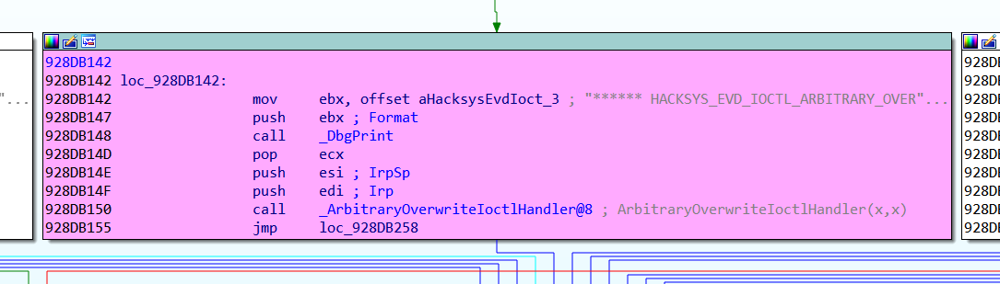
En el dispatcher que maneja los distintos IOCTL vemos que hay uno que marca ARBITRARY OVERWRITE, asi que lo marcamos, veamos primero que valor de IOCTL nos trae aquí.
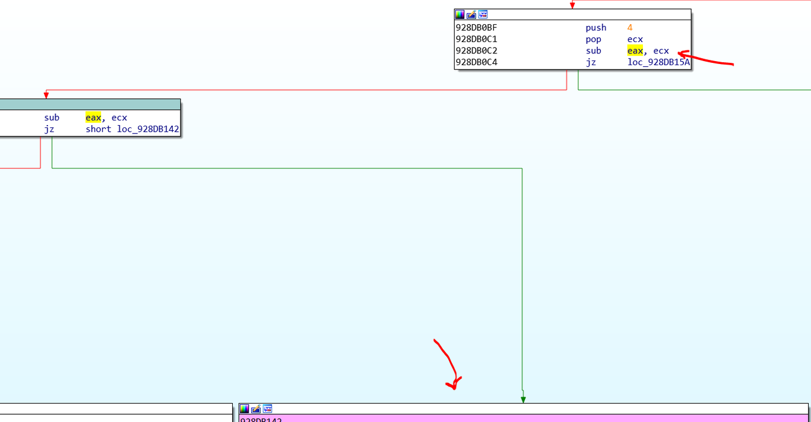
Vemos que viene restando a EAX la constante 4 dos veces y antes le resta 0x222003
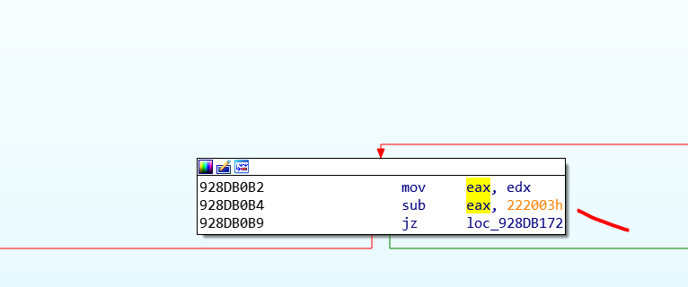
Python>hex(0x222003+8)
0x22200b
Asi que con ese IOCTL llega al bloque que necesitamos de la vulnerabilidad ya que :
0x22200b - 0x222003-4-4=0
y si es cero va al bloque alli.
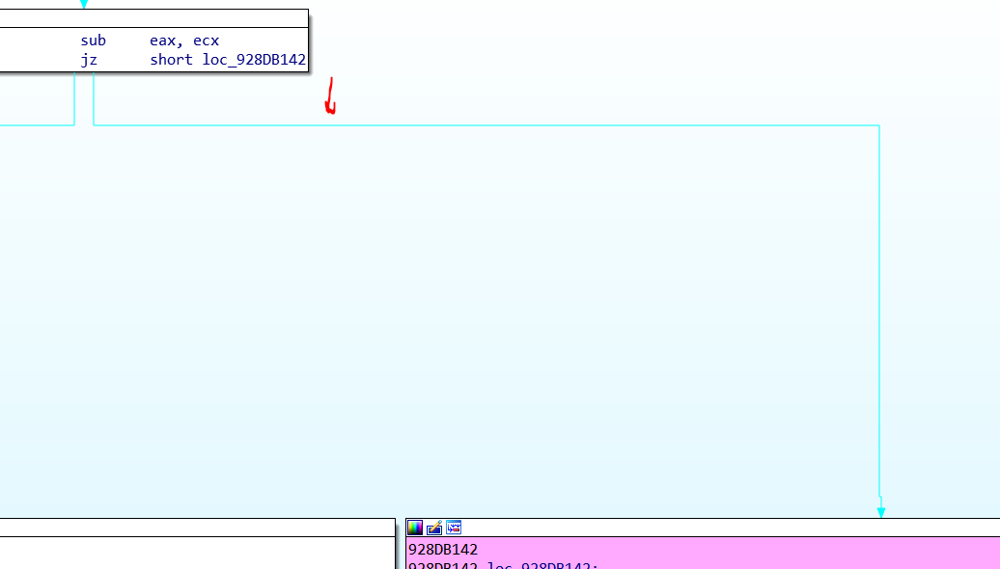
Bueno ya llegamos miremos la vulnerabilidad.
Recordemos que en IRP más 0x60 está el puntero a la estructura _IO_STACK_LOCATION, era 0x40 de Tail en la estructura IRP, y dentro de Tail en el offset 0x20 apunta a CurentStackLocation
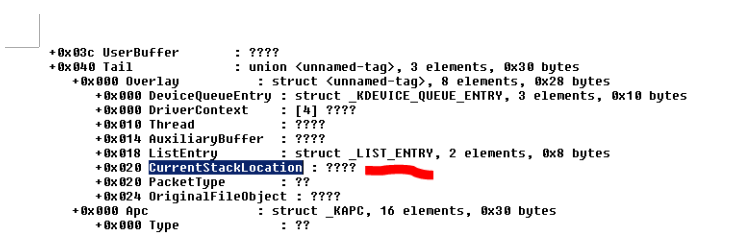
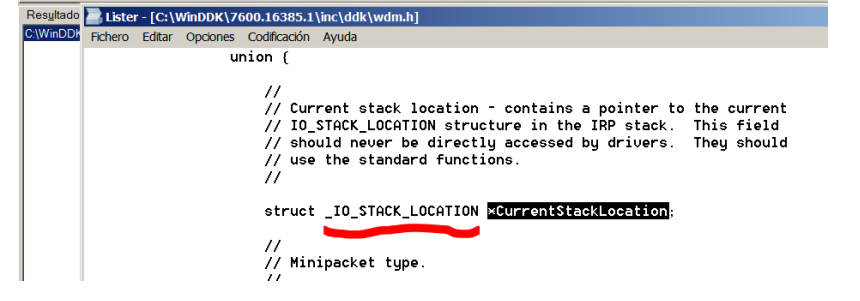
Así que 0x60 es el offset de CurentStackLocation que es del tipo _IO_STACK_LOCATION.
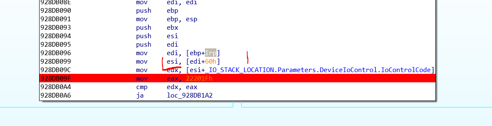
Apretando T veo el campo y que de alli lee el IOCTLCode.
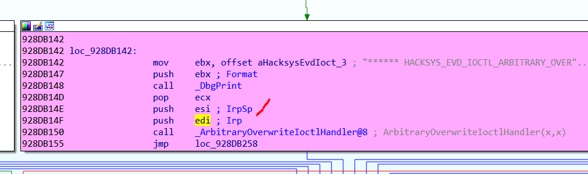
_IO_STACK_LOCATION
La pasa a los dos argumentos el puntero a IRP en EDI como primero y el puntero a la estructura _IO_STACK_LOCATION.
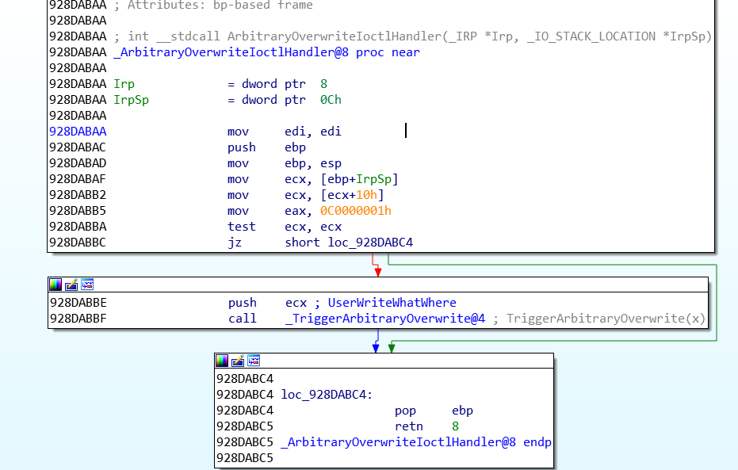
Aquí a ECX mueve el puntero a la _IO_STACK_LOCATION.
dt -r4 _IO_STACK_LOCATION
nt!_IO_STACK_LOCATION
+0x000 MajorFunction : UChar
+0x001 MinorFunction : UChar
+0x002 Flags : UChar
+0x003 Control : UChar
+0x004 Parameters : <unnamed-tag>
Ya vimos que los Parameters variaban según el caso, para cuando se llama a DeviceIoControl, es
+0x000 DeviceIoControl : <unnamed-tag>
+0x000 OutputBufferLength : Uint4B
+0x004 InputBufferLength : Uint4B
+0x008 IoControlCode : Uint4B
+0x00c Type3InputBuffer : Ptr32 Void
En el offset 0x10 desde el inicio (recordemos que hay que sumarles los 0x4 de Parameters) para el caso DeviceIoControl esta el campo Type3InputBuffer.
Alli llegan cuatro de los argumentos que se le pasan a la api DeviceIoControl.
DEVICEIOCONTROL
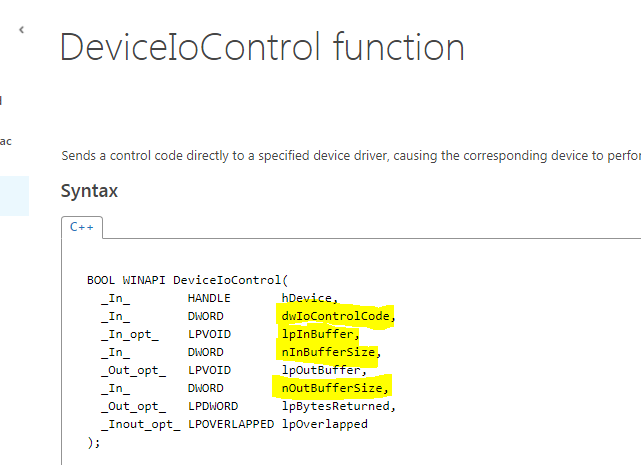
+0x000 DeviceIoControl
+0x000 OutputBufferLength es nOutBufferSize
+0x004 InputBufferLength es nInBufferSize
+0x008 IoControlCode es dwIoControlCode
+0x00c Type3InputBuffer es lpInBuffer
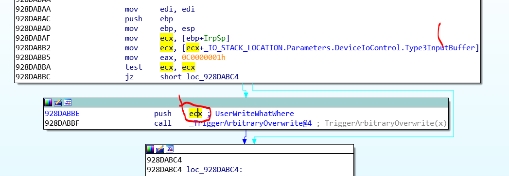
Asi que ese es nuestro buffer de entrada que le pasamos a la api DeviceIoControl.
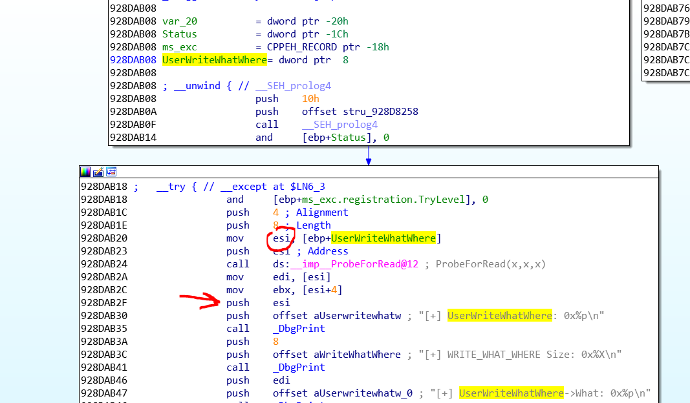
Vemos que a ESI se mueve la direccion de nuestro buffer que aquí lo llama UserWriteWhatWhere e imprime la direccion del mismo.
Luego vemos que lee el contenido de ESI y de ESI mas 4 e imprime sus direcciones lo cual nos hace pensar que es una estructura de dos punteros, alli nos dice que su size es 8.
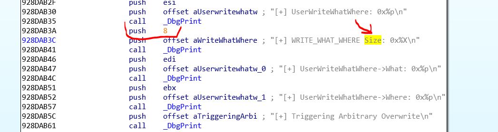
Asi que crearemos una estructura de 8 bytes, se ve que los dos campos son What y Where y que ambos son punteros asi que en 32 bits serán de 4 bytes cada uno.
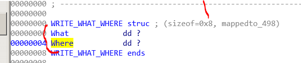
Asi que alli imprime los valores de What y Where
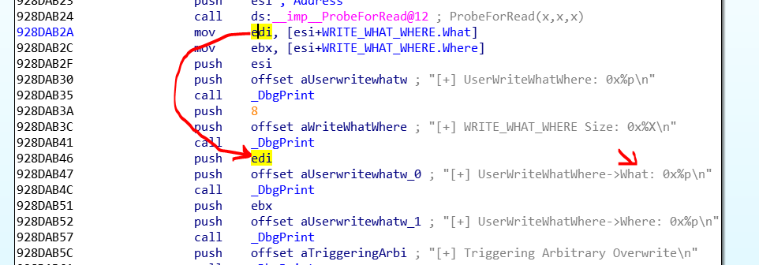
Alli vemos la parte vulnerable
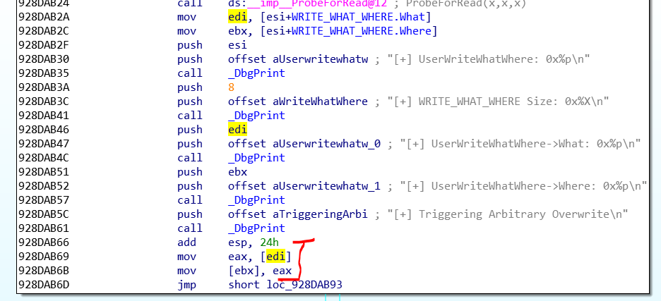
EDI es What, asi que debe ser un puntero, ya que busca el contenido de [EDI] y lo escribe en el contenido de Where en [EBX].
Asi que What debe ser un puntero a un puntero a nuestro código, y en Where habrá que buscar una tabla donde escribir (posiblemente un CALL indirecto para que escribamos el puntero a nuestro código y termine saltando a ejecutar el mismo.
Hay muchas posibilidades para explotar esto algunas mas modernas, nosotros usaremos el viejo método de la tabla HAL. (no funciona en sistemas con la protección de Intel SMEP por eso en Windows XP y 7 aun va)
Intel CPU feature: Supervisor Mode Execution Protection (SMEP). This feature is enabled by toggling a bit in the cr4 register, and the result is the CPU will generate a fault whenever ring0 attempts to execute code from a page marked with the user bit.
O sea que si desde kernel saltas a ejecutar una pagina marcada como perteneciente a USER da una excepción, evitando ejecutar como en el método que vamos a ver ahora.
Igual pudiendo escribir en KERNEL donde quieres, podes llegar a deshabilitar con suerte, habilidad y algo mas, estas protecciones, por ahora nos concentraremos en la vieja forma de explotar que sirve para WIN XP y 7 de 32 bits y también puede servir en procesadores que no tengan SMEP en otros sistemas.
http://poppopret.blogspot.com.ar/2011/07/windows-kernel-exploitation-basics-part.html
HAL Dispatch
Ese método se basa en la tabla HAL Dispatch
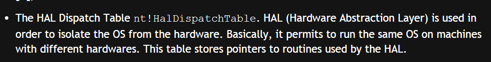
Bueno existe una función importada por la ntdll llamada NtQueryIntervalProfile, si abro en otro IDA la ntdll.dll de 32 bits veo en las funciones EXPORTADAS que esta alli.
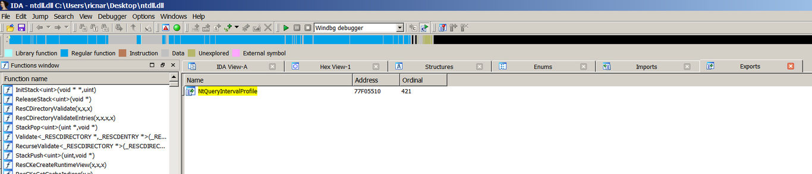
Esa función que se puede llamar desde user llega a kernel
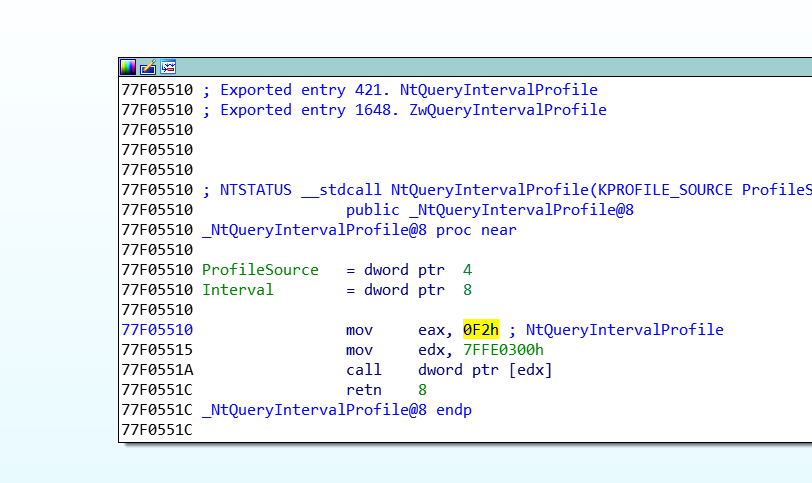
A la función nt!KeQueryIntervalProfile
nt!KeQueryIntervalProfile:
82911891 8bff mov edi,edi 82911893 55 push ebp 82911894 8bec mov ebp,esp 82911896 83ec10 sub esp,10h 82911899 83f801 cmp eax,1 8291189c 7507 jne nt!KeQueryIntervalProfile+0x14 (829118a5) 8291189e a188ca7a82 mov eax,dword ptr [nt!KiProfileAlignmentFixupInterval (827aca88)] 829118a3 c9 leave
Luego sigue aquí
829118a4 c3 ret 829118a5 8945f0 mov dword ptr [ebp-10h],eax 829118a8 8d45fc lea eax,[ebp-4] 829118ab 50 push eax 829118ac 8d45f0 lea eax,[ebp-10h] 829118af 50 push eax 829118b0 6a0c push 0Ch 829118b2 6a01 push 1
kd> u
nt!KeQueryIntervalProfile+0x23:
829118b4 ff15bc237782 call dword ptr [nt!HalDispatchTable+0x4 (827723bc)] 829118ba 85c0 test eax,eax 829118bc 7c0b jl nt!KeQueryIntervalProfile+0x38 (829118c9) 829118be 807df400 cmp byte ptr [ebp-0Ch],0 829118c2 7405 je nt!KeQueryIntervalProfile+0x38 (829118c9) 829118c4 8b45f8 mov eax,dword ptr [ebp-8] 829118c7 c9 leave 829118c8 c3 ret
Y salta a una direccion de KERNEL que esta en la tabla HAL Dispatch mas 4.
El método es ese, ya que desde user no podemos escribir dicha tabla, la vulnerabilidad en kernel nos permite escribir donde queramos asi que la direccion a escribir sera el contenido de nt!HalDispatchTable+0x4 y lo debemos hacer pisándolo con el puntero a un buffer con nuestro código.
Lo bueno es que despues podemos triggerear cuando queremos, ya que la api se puede llamar desde user, asi que con llamarla normalmente desde nuestro script al final llegara aquí
829118b4 ff15bc237782 call dword ptr [nt!HalDispatchTable+0x4 (827723bc)]
Y saltara a código al no haber SMEP ya que no se verifica que la pagina donde salta no es de kernel sino esta marcada como pagina user.
Si SMEP estuviera activado se generaría una excepción y no saltaría a nuestro código.
Adjunto el script para el que lo quiera probar igual es bastante largo asi que lo explicaremos en la parte siguiente, recuerden que solo va en un target Windows 7 de 32 bits.
Hasta la parte siguiente.
Ricardo Narvaja